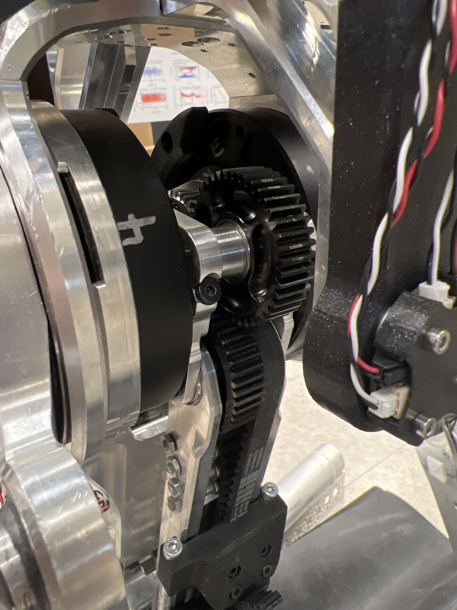
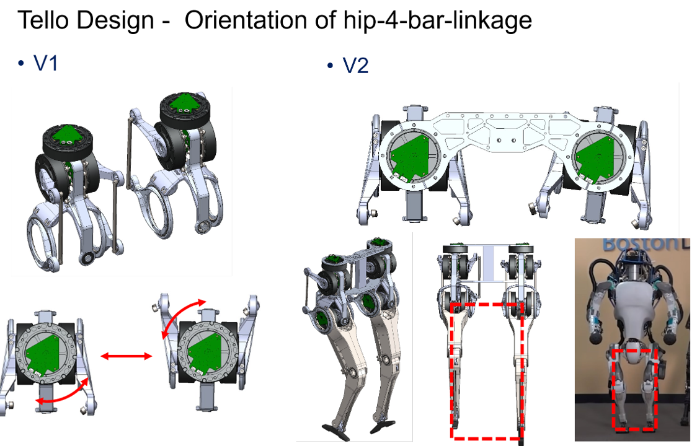
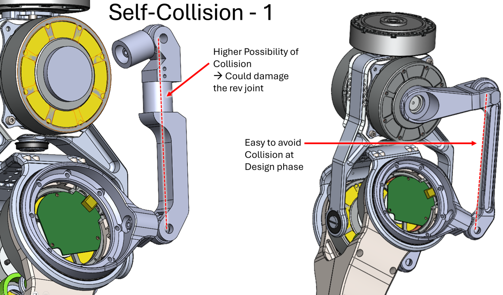
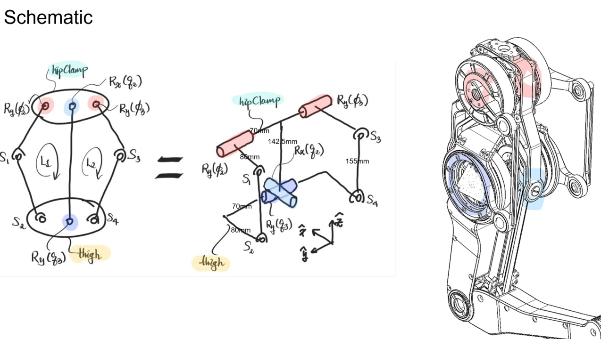
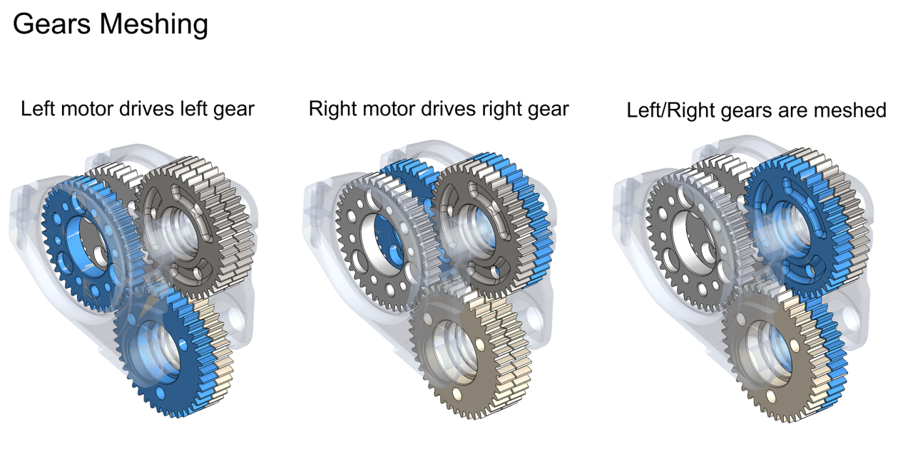
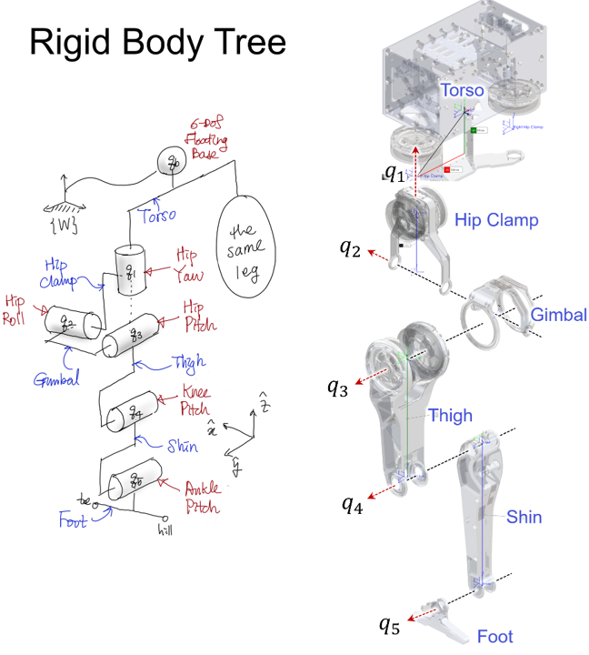
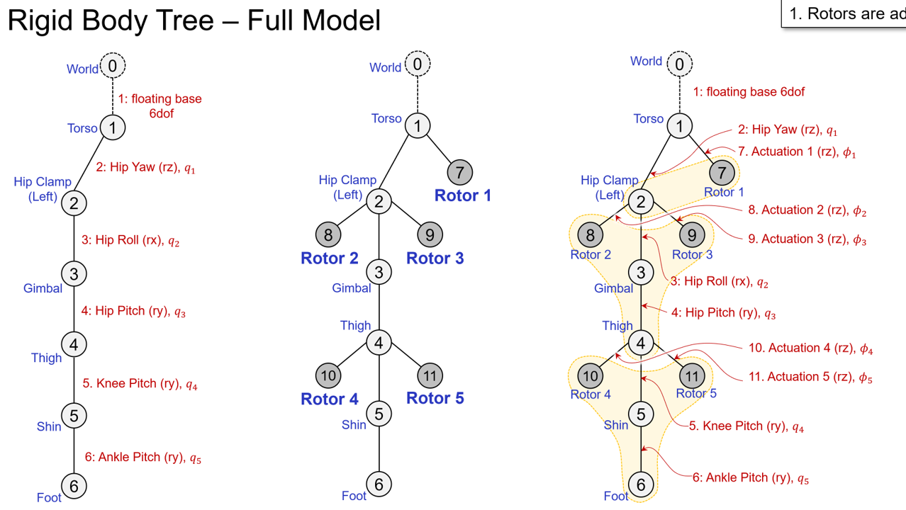
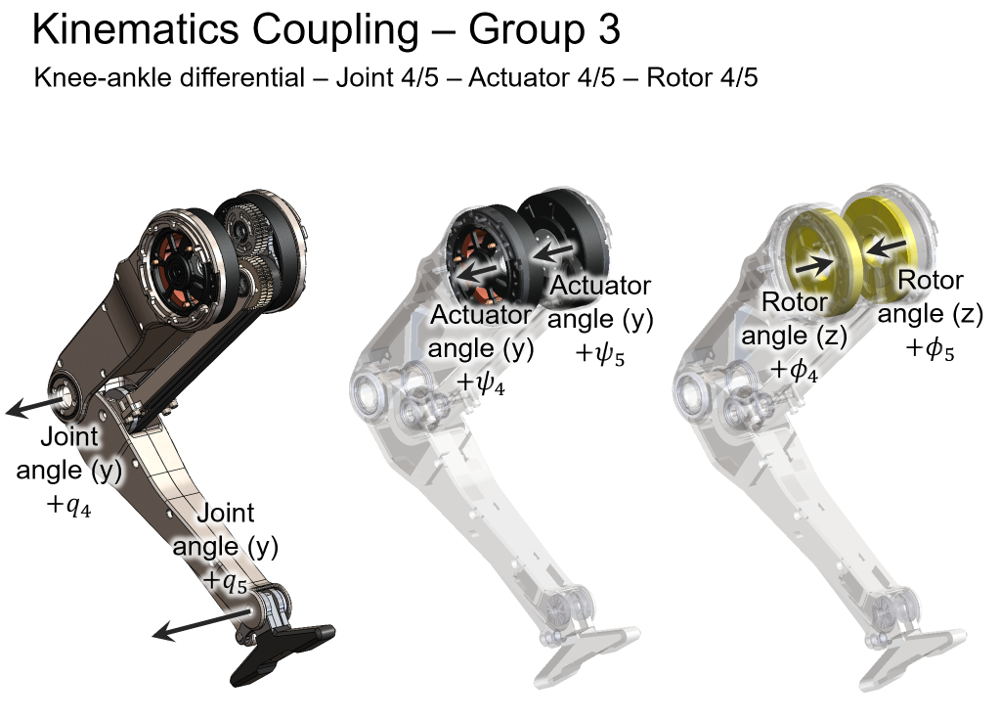
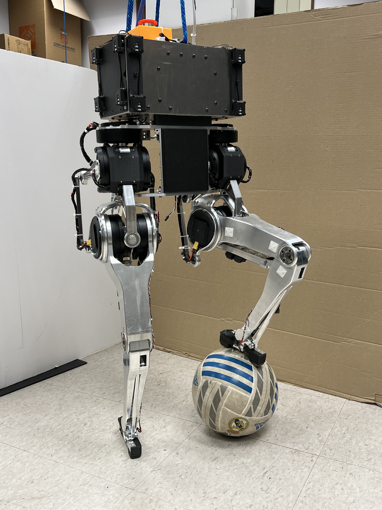

Tello: Study of Design Principles and Metrics for Dynamic Humanoid
Youngwoo Sim, RoboDesignLab, UIUC, 2019~2023
Highlights
Tello was my first humanoid which I created mostly from scratch. This robot served two purposes:
further study design principles and metrics (refer to RA-L paper)
integrate with HMI to study dynamic bilateral teleoperation
I will leave details of above points for other pages and papers. Here I am showcasing more practical design efforts and videos.
If I recall it correctly, after first CAD design, COVID-19 struck. It was very difficult time for hardware engineer to experiment and make progress with manufacturing.
Video 2019~2021
Video 2022~2024
Note: Joey leads control, Youngwoo worked on hardware improvements
Check Joey Byrnes' works and contribution: joeybyrnes.com
Design Updates
There were 4 significant design updates.
Lower leg's four-bar linkage that delivers ankle actuation to improve range of motion and reduce nonlinearity in kinematics: standard to flipped topology
The interplay of bearing tolerances' stack up and split gears caused internal collision and gouging, causing a lot of friction. Completely redesigned spur gear differential assembly.
Belt (GT3, polychain) broke so often. The issue was sharp negative bend radius. Updated with a series of idlers mimicing a large pulley forming a good negative bend and switched to kevlar core belts.
Spatial 4 bar linkage wore out over time, espeically the linings of spherical bearings. Fixed this with more permanent solution with proper hard limits and bearing choices.
After those fixes, the leg got much more stable in performance, and the frequency of maintenance decreased significantly. Morever, friction in transmission was reduced significantly.
System Schematic
v1 transmission

v2 transmission
Tello Kinematics & Dynamics
Tello's 4-bar linkages are all nonlinear and involves parallel actuation. Hence, proper analysis and modeling was necessary for precise real-time control. Kinematics was modelled with a polynomial fit from which Jacobian was derived. Tello employs a differential transmission that is quite rare, a spur gear differential.
Later I wanted to help Matthew Chignoli and Nick Adrian develop cluster rigid body algorithm. So I had to create closed loop dynamics model of tello (check rigid body tree with couplings) that involves structural and transmission bodies.

4-bar linkage study

4-bar redesign

Kinematics v1Kinematics polyfit

Carrier meshCarrier kinematics

Rigid body sketch

Rigid body tree (full)

Mechanical spaces

Ball interaction
Some details
worked on dynamometer and studied high-speed velocity estimation